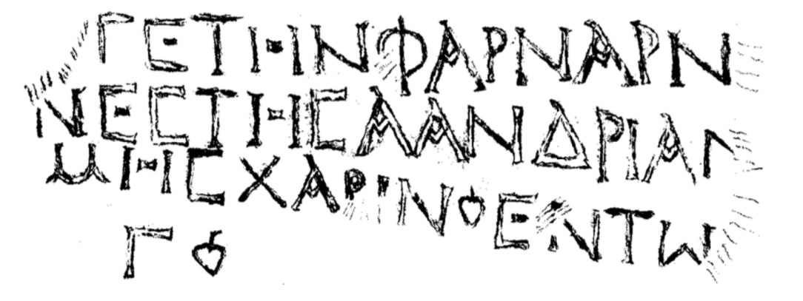

ანაპის პრიზმა
შინაარსი / Summary
საამშენებლო-მოსახსენებელი
ბიბლიოგრაფია Bibliography
კრიტიკული გამოცემა Interpretive Edition
εὐεργέτην Φαρναρν
ἀνέστησα ἀνδριάν τι
μνήμης χάριν ἐν τῷ ἔτει
γ.
დიპლომატიური გამოცემა Diplomatic Edition
ΕΥΕΡΓΕΤΗΝ ΦΑΡΝΑΡΝ
ΑΝΕΣΤΗΣΑ ΑΝΔΡΙΑΝ ΤΙ
ΜΝΗΜΗΣ ΧΑΡΙΝ ΕΝ ΤΩ ΕΤΕΙ
Γ

Pedestal from Anapa, 1874
{'default': 'აღვუმართე ქანდაკება კეთილისმყოფელ ფარნარნს (?), მოსაგონებლად (ან - პატივის მისაგებლად), წელსა... (დღესა) მესამესა. I erected the statue of Pharnarn the benefactor (?), to commemorate (or to glorify), year … (day) third.'}
{'default': 'როგორც ჩანს, წარწერა იყო ქანდაკების ბაზაზე შესრულებული. საკუთარი სახელი Φαρναρν - სხვა ძეგლების მიხედვით ცნობილი არ არის.\n მიუხედავად იმისა, რომ წარწერა ფრაგმენტულია, დაახლოებით გასაგებია მისი შინაარსი. კონსტრუქციაა ცოტა თავისებური:\n მოსალოდნელი იყო ἀνέστησα εὐεργέτῃ ἀδριάντα ე.ი. აღვუმართე კეთილისმყოფელს ქანდაკება, (აქ კი გვაქვს: აღვმართე\n კეთილისმყოფელი ქანდაკებად...) φαρναρν... არც საკუთარი სახელია ცნობილია ასეთი ფორმით და არც საზოგადო სახელი. ვ. ლატიშევი\n ფიქრობს, რომ ამომჭრელს შეეშალა და ნაცვლად ბოსფორის წარწერებში გავრცელებული სახელისა - Φαρνάκης ან Φαρνακίων ამოჭრა\n Φαρναρν. ამ ხასიათის შეცდომა სხვა არ არის, ისე რომ ამ შემთხვევაში ნაკლებ სავარაუდებელია უბრალო შეცდომა.\n წარწერა უნდა იყოს ფარნარნის (?) ქანდაკების კვარცხლბეკის წარწერა. In spite of the fact that the inscription is represented only with fragments, the content is clear.\n The structure of the sentence is a bit unusual: ἀνέστησα εὐεργέτῃ ἀδριάντα was an expected form, I erected the statue of the benefactor (while in here we have “I erected a benefactor statue”),\n φαρναρν… no personal or common name known of this form. V Latishev suggests that the author made a mistake and instead of the names Φαρνάκης or Φαρνακίων engraved the name Φαρναρν. We don’t have any evidence of this kind of a mistake so this suggestion might not be plausible.'}
<div type="edition" xml:lang="ka" ana="mtavruli" xml:space="preserve">
<ab>
<lb n="1"/><w lemma="ქრისტე"><expan><abbr>ქ</abbr><ex>რისტ</ex><abbr>ე</abbr></expan></w>
<w lemma="განსუენება"><expan><abbr>გა</abbr><ex>ნ</ex><abbr>ო</abbr><ex>ჳ</ex><abbr>ს</abbr><ex>უ</ex><abbr>ენე</abbr></expan></w>
<w lemma="სულ">სოჳ<lb n="2" break="no"/>ლსა</w>
<name nymRef="ვაჩა">ვაჩაჲს<lb n="3" break="no"/>ასა</name>
<name nymRef="გურა"><expan><abbr>გო</abbr><ex>ჳ</ex><abbr>რაჲ<lb n="4" break="no"/>სასა</abbr></expan></name>
<name nymRef="მირა"><expan><abbr>მ</abbr><ex>ი</ex><abbr>რა</abbr><ex>ჲ</ex><abbr>ს</abbr><ex>ა</ex><abbr>ს</abbr><ex>ა</ex></expan></name>
</ab>
</div>